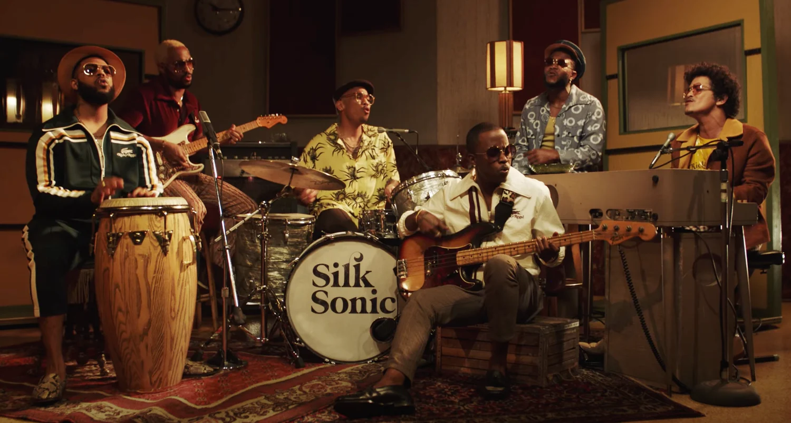
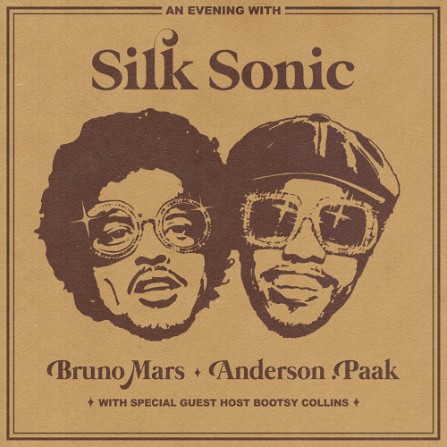

Lyrics
[Intro: Bruno Mars]
Say, baby, say, baby, say, baby
[Verse 1: Anderson .Paak & Bruno Mars]
What you doin'? (What you doin'?)
Where you at? (Where you at?)
Oh, you got plans? (You got plans)
Don't say that (Shut your trap)
I'm sippin' wine (Sip, sip) in a robe (Drip, drip)
I look too good (Look too good)
To be alone (Woo, woo)
My house clean (House clean), my pool warm (Pool warm)
Just shaved, smooth like a newborn
We should be dancin', romancin'
In the east wing and the west wing
Of this mansion, what's happenin'?
[Pre-Chorus: Bruno Mars]
I ain't playin' no games
Every word that I say is coming straight from the heart
So if you tryna lay in these arms
[Chorus: Bruno Mars]
I'ma leave the door open
(I'ma leave the door open)
I'ma leave the door open, girl
(I'ma leave the door open)
(Hopin') that you feel the way I feel
And you want me like I want you tonight, baby
(Tell me that you're comin' through)
[Verse 2: Anderson .Paak & Bruno Mars]
Ooh, you're so sweet (So sweet), so tight (So tight)
I won't bite (Uh-uh), unless you like (Unless you like)
If you smoke (What you smoke?), I got the haze (Purple haze)
And if you're hungry, girl, I got filets (Woo)
Ooh, baby, don't keep me waitin'
There's so much love we could be makin' (Shamone!)
I'm talkin' kissin', cuddlin'
Rose petals in the bathtub
Girl, let's jump in! It's bubblin'
[Pre-Chorus: Bruno Mars]
I ain't playin' no games
Every word that I say is coming straight from the heart
So if you tryna lay in these arms (If you tryna lay in these arms)
[Chorus: Bruno Mars]
I'ma leave the door open
(I'ma leave the door open)
I'ma leave the door open, girl
(I'ma leave the door open)
(Hopin') that you feel the way I feel
And you want me like I want you tonight, baby
Tell me that you're comin' through (Come on, girl)
[Bridge: Bruno Mars & Anderson .Paak]
La-la-la-la-la-la-la
I need you, baby
La-la-la-la-la-la-la
I got to see you, baby
La-la-la-la-la-la-la
Girl, I'm tryna give you this, ah
[Chorus: Bruno Mars]
Hey, hey, I'ma leave my door open, baby
(I'ma leave the door open)
I'ma leave, I'ma leave my door open, girl
(I'ma leave the door open)
And I'm hopin' (Hopin')
Hopin' that you feel the way I feel
And you want me like I want you tonight, baby
Tell me that you're comin' through (Woo!)
[Outro: Bruno Mars & Anderson .Paak]
La-la-la-la-la-la-la (Tell me)
Tell me that you're comin' through
(Woo-woo-woo, woo-woo-woo, woo-woo-woo)
(Woo-woo-woo, woo-woo-woo, woo-woo-woo)
La-la-la-la-la-la-la (La-la-la-la-la)
Tell me that you're comin' through
Girl, I'm here just waitin' for you (Oh!)
Come on over, I'll adore you (I gotta know!)
La-la-la-la-la-la-la (I'm waitin', waitin', waitin')
Tell me that you're comin' through (For you)
Girl, I'm here just waitin' for you
Come on over, I'll adore you
La-la-la-la-la-la-la (La-la-la-la)
About Leave The Door Open
'Leave the Door Open' is a 2021 Grammy-winning debut single. It blends modern R&B with a strong retro influence inspired by classic soul music from the 1970s. The song’s lyrics revolve around romance and openness, highlighting emotional honesty and intention rather than fast-paced or dramatic love. The chill rhythm, layered vocals, and live-sounding instruments give the track a warm and nostalgic feel. What makes the song especially effective is how it feels both playful and sincere at the same time, creating a mood that is calm and inviting. This balance is a key reason why the song resonates with listeners and fits well within the overall aesthetic of the album. It stood out when it was first released because it felt different from most popular songs at the time
About the Artists
'Silk Sonic' is a duo made up of Bruno Mars and Anderson .Paak, who came together to create music inspired by classic soul and funk from earlier decades. Both artists are known for their strong musical identities, and their collaboration allows them to combine smooth vocals, playful lyricism, and live-sounding instrumentation. Rather than focusing on modern production trends, Silk Sonic emphasizes groove, performance, and atmosphere. This approach gives their music a nostalgic feel while still appealing to modern audiences, making their music feel both timeless and fresh.
Track List
An Evening with Silk Sonic
Bruno Mars, Anderson .Paak & Silk Sonic
- Silk Sonic Intro
- Leave the Door Open
- Fly As Me
- After Last Night
- Smokin Out the Window
- Put On a Smile
- 777
- Skate
- Love's Train
- Blast Off
November 12, 2021
10 songs, 36 minutes